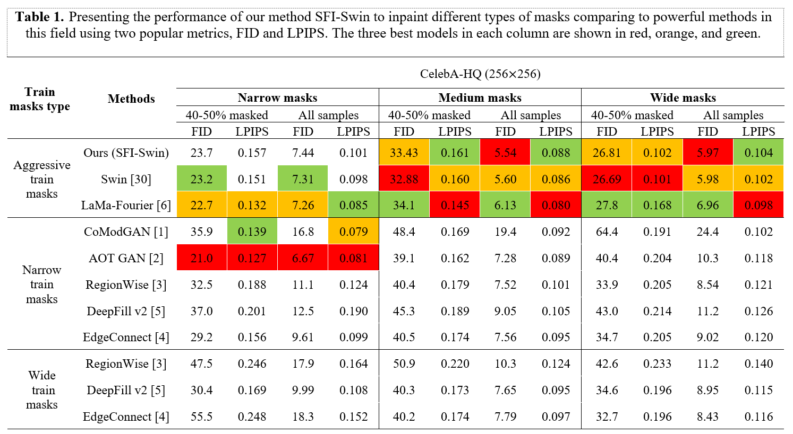
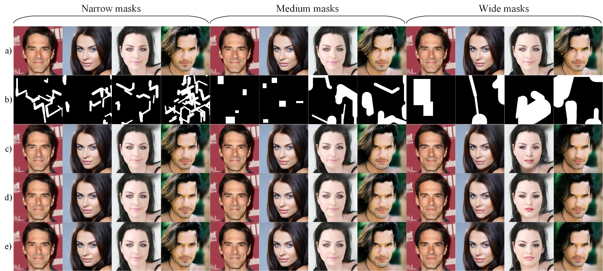

Image inpainting consists of filling holes or missing parts of an image. Inpainting face images with symmetric
characteristics is more challenging than inpainting a natural scene. None of the powerful existing models can fill
out the missing parts of an image while considering the symmetry and homogeneity of the picture. Moreover, the
metrics that assess a repaired face image quality cannot measure the preservation of symmetry between the rebuilt
and existing parts of a face. In this paper, we intend to solve the symmetry problem in the face inpainting task by
using multiple discriminators that check each face organ's reality separately and a transformer-based network.
We also propose "symmetry concentration score" as a new metric for measuring the symmetry of a repaired face
image. The quantitative and qualitative results show the superiority of our proposed method compared to some
of the recently proposed algorithms in terms of the reality, symmetry, and homogeneity of the inpainted parts.
What is the general explainations of the proposed method?
First, the generator takes the masked image as input and attempts to inpaint it. Then the inpainted image is fed to the patch discriminator to check the overall reality of the patches. Meanwhile, the inpainted image is also fed into a semantic segmentation network to separate the semantic parts of the face, such as eyes, and ears. (The architecture of these six semantic discriminators is the same). In the next step, six distinct discriminators calculate the total realness of each semantic part of the face. Then, the generator parameters will be updated based on these seven discriminators and the pixel-wise loss gradient signals, which are backpropagated to the generator.
Our results
FID and LPIPS comparison


What is symmetry concentration score (SCS)?
Symmetry concentration Score is a newly introduce metric which explained compeletly in the paper to measure the symmerty of the repaired faces base on the concentration of the inpaintor.
How to calculate it?
First, we mask an eye and a K×K patch of the face, and reconstruct the missing eye and the K×K patch. Then the absolute difference between the image with inpainted eye with the image with a missing K×K patch and the missing eye is computed. The difference shows the effect of that K×K patch on inpainting result of the missing eye. The effect of all K×K patches is computed and shown as a heatmap. The face borders are also depicted to investigate the impact of each part of the face on inpainting the missed eye.